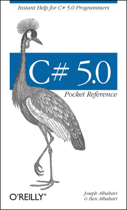
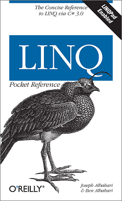

Pure distilled knowledge
|  |  |
| C# 5.0 Pocket Reference | LINQ Pocket Reference | |||
|
Free of long introductions and bloated samples, this book tells you exactly what you need to know. Despite its conciseness, it doesn’t skimp on depth or detail and covers the entire C# 5.0 language, including:
This book is ideal as a quick reference—or as a guide to get you rapidly up to speed if you already know Java, C++, or an earlier version of C#. And at $11 for 220 pages, this has to be the best value pocket reference ever! |
Ready to take advantage of LINQ with C#, but don't fancy laboring through a 1000-page book? Well, learning LINQ doesn't have to be that hard! If you already know C#, this small guide has all that it takes to get you rapidly up to speed. All the examples in the LINQ Pocket Reference are preloaded into LINQPad, the popular and free utility that will not just help you learn LINQ, but have you thinking in LINQ. This book explains:
|
|||
|
No other books or online resources can get you up to speed so quickly. |
||||
|
C# 5.0 Pocket Reference (220 pages)
|
LINQ Pocket Reference (180 pages)
|
|||

Want both books—plus coverage of the CLR and core framework—in a single volume? Click here.
Thanks to Audrey Doyle and Rebecca Rey for their awesome work on the copyediting!
C# 5.0 Pocket Reference & LINQ Pocket Reference by Joseph Albahari
& Ben Albahari
© 2007-2012 Joseph Albahari, Ben Albahari, O'Reilly Media Inc. All rights reserved.